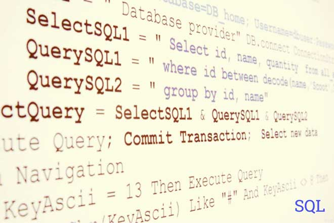

Los sistemas de bases de datos proporcionan un lenguaje de definición de datos para especificar el esquema de la base de datos y un lenguaje de manipulación de datos para expresar las consultas y las modificaciones de la base de datos. En la práctica, los lenguajes de definición y manipulación de datos no son dos lenguajes diferentes; en cambio, simplemente forman parte de un único lenguaje de bases de datos, como puede ser el muy usado SQL.
- Lenguaje de definición de datos (LDD o DDL en inglés). Mediante este lenguaje se define la estructura de almacenamiento y los métodos de acceso usados por el SGBD. Los valores de los datos almacenados en la base de datos deben satisfacer ciertas restricciones de integridad y consistencia.
- Lenguaje de manipulación de datos (LMD o DML en inglés). Este lenguaje permite al usuario tener acceso a los datos organizados mediante el modelo de datos correspondiente o manipularlos.
Las restricciones de integridad se especifican en el esquema de la base de datos y se deben cumplir en cualquier extensión del mismo. El responsable de que esto sea así es el sistema de gestión de bases de datos que debe velar en todo momento por la integridad de la información almacenada.
En el Modelo Relacional se contemplan cuatro tipos de restricciones:
- restricción de unicidad: cada campo contiene un sólo valor
- restricción de valor no nulo: no se permiten campos vacíos
- restricción de clave primaria: cada registro contiene una clave primaria única en toda la tabla
- restricción de integridad referencial: cada registro de una tabla A debe tener un registro asociado en la tabla B y viceversa